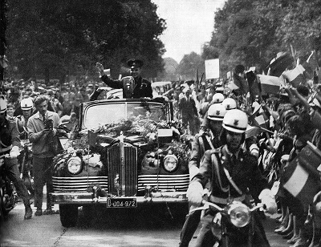
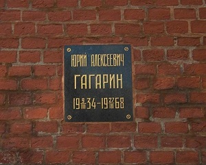

Судьба Ю. А. Гагарина после полёта в космос
Ввиду обеспечения секретности первого полёта человека в космос сам факт запуска Ю. Гагарина предварительно не освещался. Широко известные кадры, где можно его узнать, были сняты не в день запуска в космос, а позднее, специально для кинохроники, где Гагарин повторил всё, что делал при реальном запуске.
12 апреля 1961 года диктор Ю. Б. Левитан передал по радио сообщение ТАСС о полете на космическом корабле «Восток» Юрия Гагаринаː
«12 апреля 1961 года в Советском Союзе выведен на орбиту вокруг Земли первый в мире космический корабль-спутник «Восток» с человеком на борту. Пилотом-космонавтом космического корабля-спутника «Восток» является гражданин Союза Советских Социалистических Республик летчик майор Гагарин Юрий Алексеевич».
Встреча в Москве
14 апреля за Гагариным прилетел Ил-18, а на подлёте к Москве к самолёту присоединился почётный авиационный эскорт, состоящий из семи истребителей МиГ-17. Самолёты с эскортом торжественным строем прошли над центром Москвы, над Красной площадью, затем произвели посадку в аэропорту Внуково, там Гагарина ожидал грандиозный приём: ликующие люди, журналисты и операторы, руководство страны. Самолёт подрулил к центральному зданию аэропорта, спустили трап, и первым по нему сошёл Гагарин.
Дальше была поездка в открытом «ЗИЛ-111В», Гагарин стоя приветствовал встречающих. Кругом слышались поздравления, многие махали плакатами. На Красной площади прошёл митинг, на котором Никита Хрущёв объявил о присвоении Гагарину званий Герой Советского Союза и «Лётчик-космонавт СССР».
Зарубежные визиты
Первой зарубежной поездкой для Юрия Гагарина стала поездка в Чехословакию. Он летел на обычном рейсовом Ту-104 в Прагу. Пассажиры рейса узнали Гагарина и кинулись к нему за автографами.
Далее путь Гагарина лежал в Болгарию. При подлёте к Софии болгарские лётчики встретили его почётным эскортом истребителей. В Финляндии Гагарин побывал дважды — в 1961 и 1962 годах.
В июле 1961 года Гагарин прибыл в Англию по приглашению профсоюза литейщиков Англии. За время этого визита Юрий Гагарин встретился с руководством страны: с премьер-министром Гарольдом Макмилланом и с королевой Елизаветой II. Королева вопреки этикету сфотографировалась с космонавтом на память, мотивировав это тем, что он не обычный, земной человек, а небесный и потому нарушения этикета нет.
За 1961 год Гагарин посетил Чехословакию, Болгарию, Финляндию, Великобританию, Польшу, Кубу, Бразилию с остановкой на острове Кюрасао, Канаду с остановкой в Исландии, Венгрию, Индию, Цейлон (ныне Шри-Ланка), Афганистан.
Всего Юрий Гагарин в рамках зарубежных визитов посетил около 30 стран.
Дальнейшая жизнь и карьера
3 сентября 1961 года Юрий Гагарин поступил в Военно-воздушную инженерную академию им. Жуковского, а 17 февраля 1968 года под руководством С. М. Белоцерковского защитил в ней дипломный проект по методологии использования и дозвуковой аэродинамике разрабатываемого группой слушателей-космонавтов одноместного воздушно-космического летательного аппарата. Государственная экзаменационная комиссия присвоила полковнику Юрию Гагарину квалификацию «лётчик-инженер-космонавт» и рекомендовала его в адъюнктуру академии.
В 1964 году Гагарин стал заместителем начальника Центра подготовки космонавтов и был назначен командиром отряда советских космонавтов.
В 1966 году Гагарина избрали Почётным членом Международной академии астронавтики, в июне того же года Гагарин уже приступил к тренировкам по программе «Союз».
Первый после перерыва самостоятельный вылет на МиГ-17 Гагарин совершил в начале декабря 1967 года. Приземлился со второго захода из-за неверного расчёта на посадку, характерного для лётчиков низкого роста, имевших перерыв в полётах. Это стало поводом для опасений властей потерять популярного героя в случае аварии.
Юрий Гагарин приложил немало усилий для осуществления лунных космических полётов и сам до своей гибели состоял членом экипажа одного из готовящихся лунных кораблей. Гагарин не имел права самостоятельно летать на истребителе, хотя и был заместителем начальника ЦПК по лётной подготовке, а поэтому добился направления на восстановление квалификации как лётчик-истребитель.
Несмотря на занятость, Гагарин находил время и для хобби, которыми были катание на водных лыжах и коллекционирование кактусов.
Гибель
27 марта 1968 года Гагарин погиб в авиационной катастрофе, выполняя тренировочный полёт на самолёте МиГ-15УТИ под руководством опытного инструктора В. С. Серёгина, вблизи деревни Новосёлово Киржачского района Владимирской области. Тела Гагарина и Серёгина были кремированы. Прощание с Гагариным и Серёгиным состоялось 30 марта 1968 года, в Центральном Доме Советской Армии были установлены урны с их прахом, на Красной площади состоялся траурный митинг, в стране была объявлена минута молчания, урны с прахом Гагарина и Серёгина были захоронены у Кремлёвской стены с воинскими почестями.
Наиболее вероятной причиной катастрофы стало сближение и резкое уклонение от другого самолёта, с возможным попаданием в его вихревой след. Вследствие этого МиГ-15УТИ Гагарина и Серёгина попал в плоский штопор. Находясь в облачном слое, лётчики не могли видеть высоты полёта. Руководствуясь неточными метеорологическими данными и показаниями приборов, лётчики предполагали, что успеют вывести самолёт из падения, но запас высоты оказался недостаточен. После выхода из облачного слоя катапультироваться было уже поздно.